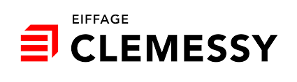

PPE Android Clemessy

CLEMESSY est une entité du groupe Eiffage Énergie Systèmes, c’est sous cette marque que sont fédérées l’ensemble des compétences et expertises du groupe, dédiées au monde de l’industrie.
Vous êtes mandaté par le service chargé de la gestion des équipements, afin de créer en Java une application spécifique pour téléphone mobile Android. Celle-ci devra aider à tracer les différents matériels utilisés au sein de l’entreprise (caisses à outils, échelles, pirs, etc…).
Lien vers le gitLab du projet Android : ClemessyAndroid
Lien vers le gitLab de l'API du projet Android : apiClemessy
PPE Gestion Des Stages
 Une société assure des cours de formation continue auprès de stagiaires salariés de diverses entreprises.
Pour assurer la gestion des formations, une application web est envisagée. Une base de donnée en postgresql et un code en HTML/PHP et SYMFONY.
Notre rôle étant de rendre une application web stable et sécurisée.
Lien vers le GitLab : TP Gestion des étudiants
Une société assure des cours de formation continue auprès de stagiaires salariés de diverses entreprises.
Pour assurer la gestion des formations, une application web est envisagée. Une base de donnée en postgresql et un code en HTML/PHP et SYMFONY.
Notre rôle étant de rendre une application web stable et sécurisée.
Lien vers le GitLab : TP Gestion des étudiants
TP Gestion Des Films
Vous développerez une application Android Simple afin de visualiser la liste des
prochains films à sortir tels que renvoyés par le site https://www.themoviedb.org/.
En utilisant bien évidement leurs api JSON, on va donc pouvoir faire un traitement de données sur une application Android sur une base de données
distante, puis mettre une map Google Map avec les différents cinémas de l'api.
Lien vers le GitLab du projet : les Films Android
 Dans ce TP qui fut le dernier TP de réseau, le but était de configurer un réseau de plusieurs machines qui devaient communiquer entre elles,
qu'elles soient dans le même réseau ou à l'exterieur. Nous avons donc du faire des vlan pour les communications internes, la configurations des routes,
des switchs et des machines.
Dans ce TP qui fut le dernier TP de réseau, le but était de configurer un réseau de plusieurs machines qui devaient communiquer entre elles,
qu'elles soient dans le même réseau ou à l'exterieur. Nous avons donc du faire des vlan pour les communications internes, la configurations des routes,
des switchs et des machines.